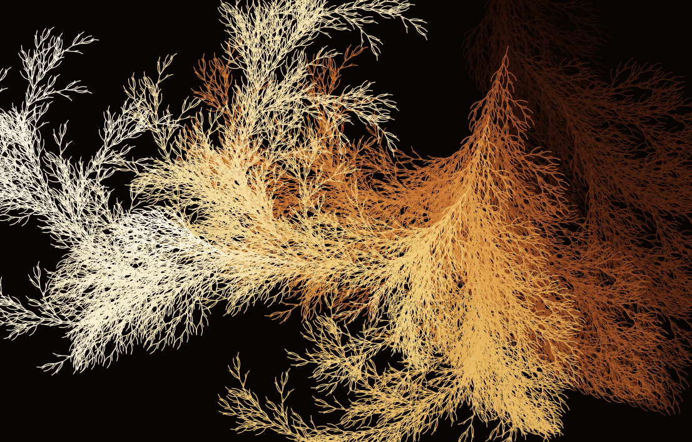
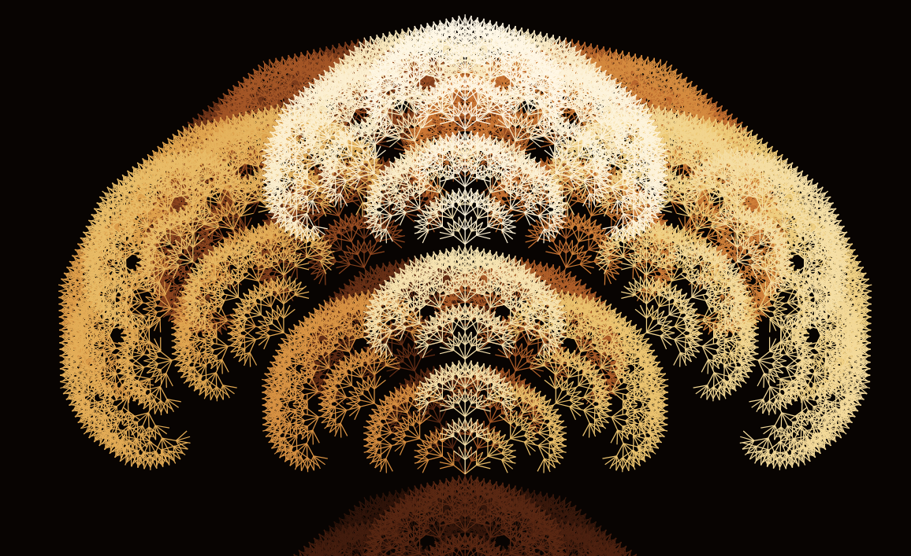
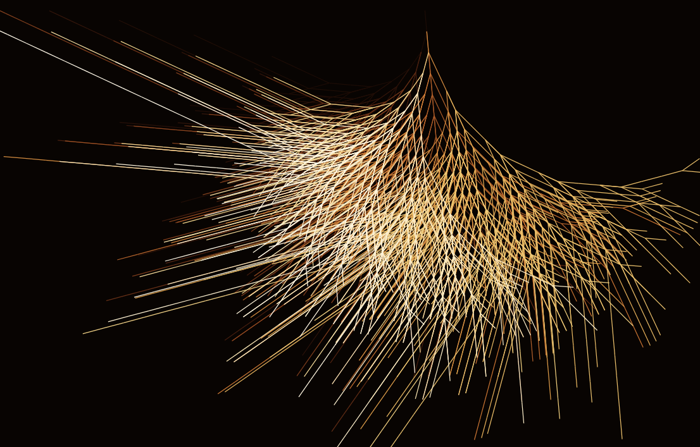

Urban data science
Cities, heterogeneous data, change.
Mindstone AI Meetup · · EPITECH, Lyon
Work and creativity
in the age of AI
What becomes possible?
What still matters?
John Samuel
CPE Lyon · LIRIS (CNRS UMR 5205)
Researcher · Educator · Creator
johnsamuel.info
My research lens
Cities, heterogeneous data, change.
Sources, memory, storytelling.
Making complex relationships visible.
How can heterogeneous data become knowledge that humans can explore?
Research in practice
Images → Context
Iconographic sources + 3D positioning
Link heterogeneous sources.
Visualize them in 3D.
Patterns → Understanding
Aerial imagery, LiDAR, urban data
Map plantability.
Assess heat vulnerability.
Terms → Knowledge
LLMs + expert curation
Propose concepts and relations.
Align to existing vocabularies.
From abundant material to structured, explorable knowledge.
1 ANR : Agence nationale de la recherche · agape-anr.github.io
2 IA.rbre : TelesCoop, Métropole de Lyon, LIRIS · France 2030 · iarbre.fr
3 FSP : Fondation des Sciences du Patrimoine · github.com/VCityTeam/TAC
An intellectual journey
My starting point
Rules
Datalog · declarative queries
Explicit semantics
A different capability
Patterns
Learned representations
Statistical associations
An emerging direction
Together
Discover possibilities
Organize, verify, reuse
Neural models discover possibilities. Symbolic models make them reusable.
Frugal AI starts before training
Think of your next AI project. Where would you start?
Could retrieval or explicit rules suffice?
Can an existing, smaller model do the job?
Fine-tune or train only when the task justifies it.
Count the whole cost: data · energy · expert time
Choosing what to compute is itself an act of intelligence.
Programming in human languages
ThenExploring a multilingual
command line
Nowmultilingual
A programming language
Different languages → shared program semantics
Actual code · Hello World
English
print("Hello world")Français
afficher("Bonjour le monde")Localized builtins · shared execution model
Examples from the project README.
More people should be able to express computational ideas in their own languages.
Who gets to shape what we know?
Shared facts
C · developer · Dennis Ritchie
C · influenced · C++
Language-aware expression · illustrative example
C was developed by Dennis Ritchie and influenced C++.
C a été développé par Dennis Ritchie et a influencé C++.
Open source · Open data · Reproducibility · Multilinguality
Communities provide what data alone cannot: context, correction and meaning.
Teaching C at CPE Lyon
AI makes practical work easier. Fundamentals still matter.
Adapt questions to learning in the age of AI.
Exploring learning through play.
Assess understanding as well as the result.
Two complementary settings
Without internet
Reason about C fundamentals.
Trace code. Explain memory.
With AI
Build, test and debug.
Explain the code and the choices.
When AI can produce the code, how do we evaluate what students understand?
From content to creative systems



A creative loop
Repeat → branch → vary → observe
Fractals · cellular automata
Probabilistic rule-based worlds.
If variations are endless, what makes one creation worth keeping?
Abundance must not become homogenization
But did my eyes
see it?
Who chose the data? The language? The frame?
Abundance should widen creative diversity, not narrow it.Attention. Experience. Responsibility. Meaning.
Golden hour, Lyon · Photograph by John Samuel
← → / Space: navigate and reveal · Home / End: first / last slide